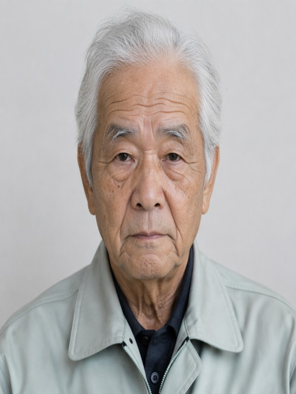

灯篭リュエ
detector: haar / faces: 4
status: ok
出力なし
竜宮セツ
detector: none / faces: 0
status: need_manual
笠本縫ル
detector: animeface / faces: 1
status: ok
出力なし
詠壽ラカン
detector: none / faces: 0
status: need_manual
課擁チカコ
detector: haar / faces: 2
status: ok
身織ルネ
detector: haar / faces: 1
status: ok
鴉守セツ
detector: haar / faces: 2
status: ok

黄瀬まナグヮァ
detector: haar / faces: 1
status: ok